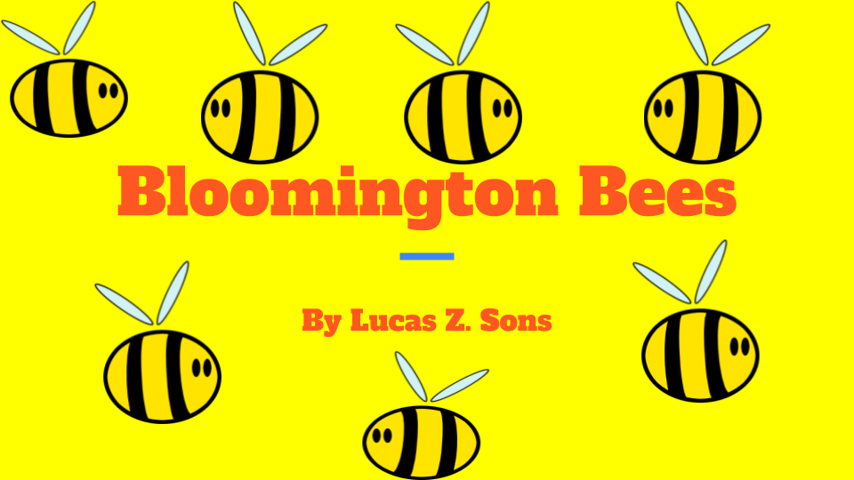
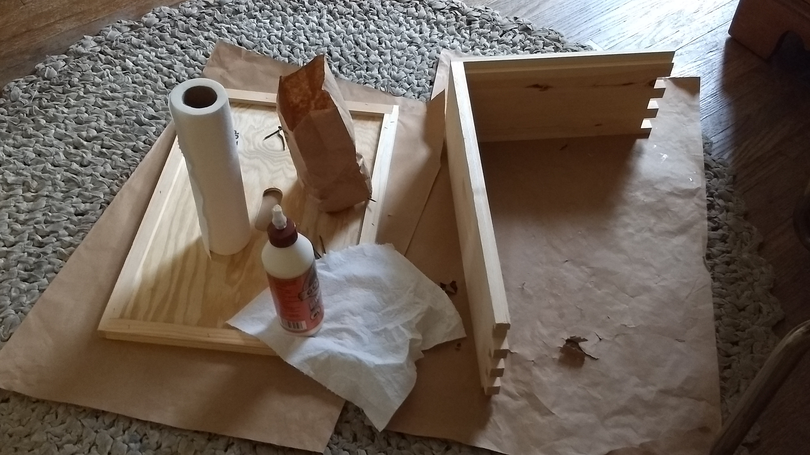
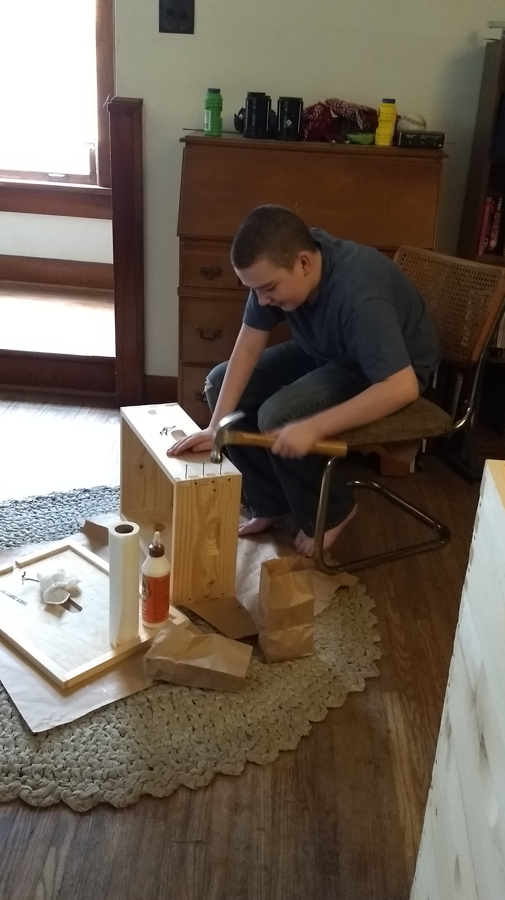
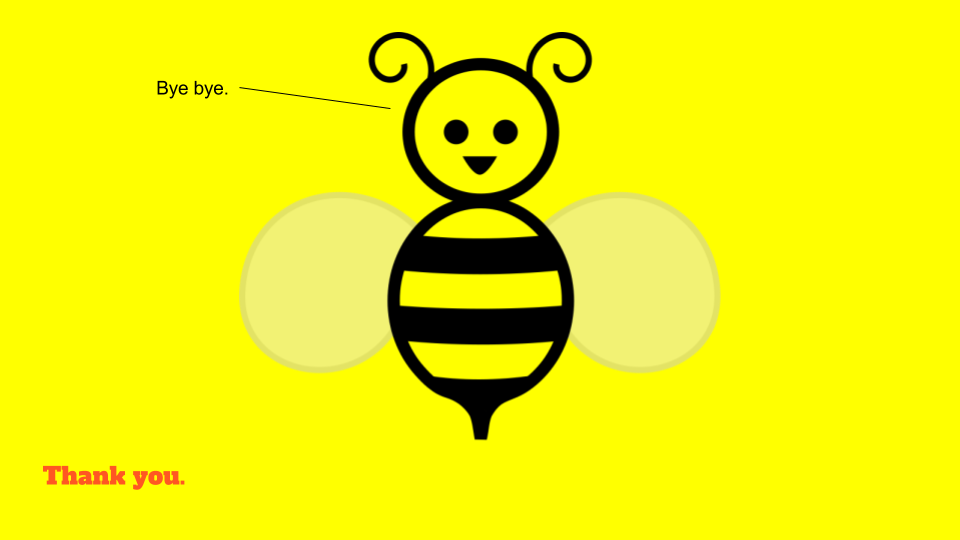

So it bee-gins.
When most people talk about startups, they conjure up visions of inexperienced hipsters fighting for VC1 money with a “build it now, exit soon, profit will magically happen sometime” attitude. There’s a lot more going on in the world–a lot more going on just in the US–but it gets little attention because it’s not trendy and “high tech”.
My 14yo is starting up this year.
It all started last winter, when Lucas saw a movie set in Sherlock Holmes’ later life. Holmes pulled himself out of retirement to solve one last case. In doing so, our favorite detective entrusted his home apiary2 to a young neighbor boy to ensure it would be looked after in his absence.
Lucas, who used to be afraid of bees, became fascinated with the idea of raising them and collecting honey. A few people thought I was crazy, but hey his mom is the sort who deals with her acrophobia by going mountain climbing, so why not? I reminded Lucas that a friend of ours had started an apiary about a year before, and Lucas was soon off to the races, trying to find out what he needed to do to start an apiary of his own.
I learned more about bees than I ever wanted to know.
For months, the subject of most conversation in my house has been bees, honey, beeswax, hives, and the things one can do with them. Honeybees originating in Italy are higher producers than those originating in Russia, which are hardier. You can tell which cell will hatch a queen by its color. Bees only buzz when they are angry or can’t find their queen.
Lucas steeped himself in bee-related Youtube videos, as well as a book and articles sent to him by our beekeeping friend.
It turns out that bees are expensive.
To start his apiary, Lucas was going to need a hive stand, hive components, protective gear, a smoker, be feeding supplies, and, of course, bees. Although he had more than $200 saved up, this wasn’t going to be enough to launch an apiary. Like any kid, he wanted to spend my money, but I wasn’t going to just throw a few hundred dollars at something that might evaporate when my teen’s attention span ran out.
To show that he was serious, I required Lucas to make a business plan and pitch it to me, as any founder would do to their potential backers. Here’s what the title slide of his pitch deck looked like:

It took him about two months to finish the business plan and pitch deck, having never done this sort of thing before. Lucas ended up researching a lot of things he hadn’t thought about: Where would he sell his product, and for how much money? How would he package it? What was his marketing strategy? What risks would he have to mitigate along the way, and how would he do so?
Lucas realized that he would have to start two hives, to hedge against winter die-off. Losing some bees in the Indiana winter is normal: if you only have one queen, though, you lose your entire hive if you lose her. With two hives, each with their own queen, chances are at least one queen will survive the winter. In future years, Lucas will have expanded to enough hives that winter die-off won’t be so scary.
Lucas also learned that, to help his hives fill out by winter, he would have to feed his bees. Bees are amazing foragers, traveling up to 2 miles from the hive in search of nectar, but starting a hive from nothing takes an incredible amount of resources. By providing the bees with a steady supply of sugar syrup, Lucas could ensure that strong hives were built by the time the weather turns cold.
Lucas found out what prices honey was going for locally (bulk and retail), and learned that a local farmer’s market offers free tables and promotion for sellers under 16 who manage their own booths (i.e. parents aren’t running the show). He priced packaging, signs, and business cards for his beekeeping operation as well.
Lucas quickly learned that a wise entrepreneur doesn’t operate in a vacuum: his business plan included myself as his business advisor, and our beekeeping friend as a subject-matter expert. It’s great when your investors make good advisors, because they have a vested interest in your success! Being mom, I was Lucas’s investor. However, he did a great job of getting others excited about his endeavor. Soon, our beekeeper friend had offered him some free start-up bees, and Grandma had decided to purchase materials and make a nice bee-themed tablecloth and other display items for Lucas’s farmers’ market booth.
Beekeeping and bookkeeping
Lucas’s plan was definitely for the long term, and he backed it up by saving his money for the start-up costs in the months leading up to this spring. When friends or relatives asked him what he wanted for holiday or birthday gifts, he always responded, “money for my bee business, please”.
In the first year, it was questionable whether Lucas would be able to harvest any honey, wax, or comb. That would depend on how fast the bees built up their hives. He didn’t want to set them back, harming long-term gains, just to get an early honey harvest. He planned conservatively, ensuring that he could cover his expenses by the end of year two, even if a third of his bees died off in winter.
Preparing the hives
Lucas’s first purchase, on a trip to Kelley Bee Supply down in Kentucky, were frames for his hives. A frame hangs in a hive box and gives bees a place to build their honeycomb. Lucas chose “foundationless frames” which, weirdly enough, aren’t mainstream these days. Most beekeepers seem to favor frames with foundation: a plastic base that is shaped like the backplane of sorts built between layers of honeycomb. It’s believed that foundation helps the bees speed up hive building. However, there are down sides: the most robust bee home is one that bees have built to their own specs. Forgoing foundation means that you get stronger honeycomb at a slower pace that allows the colony to grow up before it starts building out too far.

That’s a frame. You’ll see that the top bar hangs over the sides, to allow the frame to rest on a ledge inside the top of a hive box.

This photo is taken at an angle that shows how a triangular ridge hangs down from the inside of the frame’s top side. This gives the bees something to attach their honeycomb to.
The frames, of course, need a hive to hang inside. A modern beehive consists of a top cover, a bottom cover, and some number of “hive boxes” in between, filled with frames. These come in different sizes: for Lucas’s hives, we chose 8-frame mediums, because it’s the smallest practical size and would be easy for him to move around himself even when loaded down with honey, comb, and bees. To save money, Lucas purchased the boxes unassembled, and spent a Sunday afternoon putting them together:
 
The outsides were painted to help the boxes last a bit longer outside in the elements, but it’s important not to paint the insides, as that would make an unhealthy environment for the bees.

Disaster Strikes
Over the winter, a number of our friend’s bees froze to death due to water intrusion into hives. It’s one thing for hives to get a little wet, or a lot cold, but water freezing in the hive can and will kill bees. Lucas lost his source of donor bees!
Bastin’s Bees, an apiary outside of Indianapolis, came to the rescue. Ron Bastin took a late bee order and helped make the project affordable for Lucas and his financial backer. Our bees came this week!
June is a bit late for starting brand-new hives, so there likely won’t be a honey harvest this year. However, the bees should still have time to build up their homes before winter. Our beekeeper friend treated Lucas to some very nice feeders to help deliver lots of sugar syrup, encouraging fast colony-building.
Because one challenge wasn’t enough: the day before we were to pick up Lucas’s bees, he had an accident while doing crafts and needed stitches for a cut on his hand. Two hours in the local urgent care later, he was exhausted but back home. We’d missed our window for building the hive stand that day, and I was behind on work. I downed some coffee and caught up so Saturday would remain free.
More helping hands
We picked up the bees Saturday morning from Bastin’s, along with two deep hive boxes, because that was the size of frame the bees came on. There would be no time to paint the deep boxes or the new feeders before bees moved in. Two NUCs, corrugated plastic containers for bee transport with a few frames in them, rested under a shade tree while we hastily built the hive stand. Another friend and long-term houseguest was a tremendous help with the building.
Because the back of our property is sloped, we had to dig quite a bit to make sure the hive stand would come out level.

Lucas’s beekeeping mentor soon arrived to help him move his bees into their new homes. The expert installed bees from the first NUC into the first hive, then Lucas installed the bees from the second NUC into the second hive.


The bees are in…
Now we give them a couple of weeks to settle into their new home. The bees seem to like the hive on the right better than the hive on the left for some reason. If the populations are very uneven by two weeks from now, Lucas will have to swap out full frames from the high-population hive for some empty or less-full frames from the low-population hives to even them out and ensure that both hives are healthy.
He’ll add boxes to the stack as the bee population grows, making each hive taller over time. Eventually, he should be able to phase out those deep boxes in favor of easier-to-handle mediums. Meanwhile, the bees get a steady diet of sugar syrup from the feeder boxes just under the hive covers to help supply their new hives. Lucas’s first business is what all the buzz is about3
